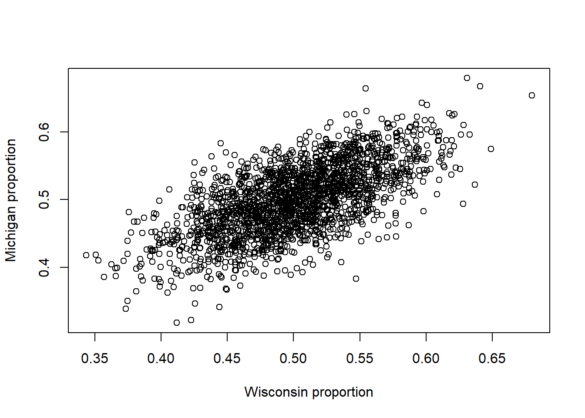

x <- runif(10000, -1, 1)
y <- x^2
cov(x,y)[1] 0.0003628265In these notes, we return to a very basic idea: independence of random variables. We will discuss in more detail what it means for variables to be independent, and we will discuss the related notion of correlation. We will also see how independence relates to “conditional probability”, and how we can use this different “kind” of probability to answer questions that frequently arise in statistics (especially in medical trials) by appealing to Bayes’ rule.
After this lesson, you will be able to
When working with random variables, we start with a set of possible outcomes, usually denoted \(\Omega\).
A subset \(E \subseteq \Omega\) of the outcome space is called an event.
A probability is a function that maps events to numbers, with the properties that
Note: If \(\Pr[E_1 \cap E_2]=\emptyset\), we say that \(E_1\) and \(E_2\) are mutually exclusive (or disjoint)
We say that two events \(E_1\) and \(E_2\) are independent if \(\Pr[ E_1 \cap E_2 ] = \Pr[ E_1 ] \Pr[ E_2 ]\). Note that it is very common to write \(\Pr[ E_1, E_2]\) to mean \(\Pr[ E_1 \cap E_2 ]\). We usually read that as “the probability of events \(E_1\) and \(E_2\)” or “the probability that \(E_1\) and \(E_2\) occur”.
Two random variables \(X\) and \(Y\) are independent if for all sets \(S_1,S_2\), we have \(\Pr[ X \in S_1,~ Y \in S_2 ] = \Pr[ X \in S_1 ] \Pr[ Y \in S_2 ]\).
Roughly speaking, two random variables are independent if learning information about one of them doesn’t tell you anything about the other.
Suppose that you roll a die and I flip a coin. Let \(D\) denote the (random) outcome of the die roll, and let \(C\) denote the (random) outcome of the coin flip. So \(D \in \{1,2,3,4,5,6\}\) and \(C \in \{H,T\}\). Suppose that for all \(d \in \{1,2,3,4,5,6\}\) and all \(c \in \{H,T\}\), \(\Pr[ D=d, C=c ] = 1/12\).
Question: Verify that the random variables \(D\) and \(C\) are independent, or at least check that it’s true for two particular events \(E_1 \subseteq \{1,2,3,4,5,6\}\) and \(E_2 \subseteq \{H,T\}\).
Suppose that we roll a six-sided die. Consider the following two events: \[ \begin{aligned} E_1 &= \{ \text{The die lands on an even number} \} \\ E_2 &= \{ \text{The die lands showing 3} \}. \end{aligned} \]
Are these two events independent? Our intuitive definition of independence is that learning about one event shouldn’t change the probability of the other event. These two events surely fail that test: if I tell you that the die landed on an even number, then it’s certainly impossible that it landed showing a 3, since 3 isn’t even.
Let’s verify this intuition by checking that these two events fail the formal definition of independence. That is, let’s verify that \[ \Pr[ E_1 \cap E_2 ] \neq \Pr[ E_1 ] \Pr[ E_2 ]. \]
There are six sides on our die, numbered 1, 2, 3, 4, 5, 6, and three of those sides are even numbers, so \(\Pr[ E_1 ] = 1/2\).
The probability that the die lands showing 3 is exactly \(\Pr[ E_2 ] = 1/6\).
Putting these together, \(\Pr[E_1] \Pr[E_2] = 1/12\).
On the other hand, let’s consider \(E_1 \cap E_2\). This is the event that the die lands showing an even number and it lands showing three. These two events cannot both happen!
That means that \(E_1 \cap E_2 = \emptyset\). That is, the intersection of these two events is the empty set. The laws of probability require that \(\Pr[ \emptyset ] = 0\) (Aside: why? Hint: \(\Pr[ \Omega ] = 1\) and \(\emptyset \cap \Omega = \emptyset\); now use the fact that the probability of the union of disjoint events is the sum of their probabilities).
So we have \[ \Pr[ E_1 \cap E_2 ] = 0 \neq \frac{1}{12} =\Pr[ E_1 ] \Pr[ E_2 ]. \]
Our two events are indeed not independent.
Important note: it’s not always so obvious that two events are independent! Any probability textbook will have a collection of good examples of less intuitive independent and dependent events.
What do we mean by independent random variables? Well, a strict, formal definition is going to have to wait for a future math class.
For this semester, we’ll say that two random variables \(X\) and \(Y\) are independent if any two events concerning those random variables are independent.
That is, for any event \(E_X\) concerning \(X\) (i.e., \(E_X = \{ X \in S \}\) for \(S \subseteq \Omega)\) and any event \(E_Y\) concerning \(Y\), the events \(E_X\) and \(E_Y\) are independent.
Said another way, if two random variables \(X\) and \(Y\) are independent, then for any two sets \(S_1, S_2 \subset \Omega\), \[ \Pr[ X \in S_1, Y \in S_2 ] = \Pr[ X \in S_1] \Pr[ Y \in S_2 ]. \]
In particular, if \(X\) and \(Y\) are both discrete, then for any \(k\) and \(\ell\), \[ \Pr[ X=k, Y=\ell ] = \Pr[ X=k ] \Pr[ Y=\ell ]. \]
Similarly, if \(X\) and \(Y\) are continuous, then the joint density has the same property: \[ f_{X,Y}(s,t) = f_X(s) f_Y(t). \]
Don’t worry about these mathematical details too much at this stage– We just want to make sure that you’ve seen a little bit of this so that it isn’t completely new to you when you go off and do your readings and, more importantly, when you see these ideas in your later classes.
Recall the definition of the expectation of a random variable \(X\) with outcome set \(\Omega\), \[ \mathbb{E} X = \int_\Omega t f_X(t) dt, \]
if \(X\) is continuous with density \(f_X\), and \[ \mathbb{E} X = \sum_{k \in \Omega} k \Pr[X=k] \]
if \(X\) is discrete with probability mass function \(\Pr[ X=k]\).
With the expectation defined, we can also define the variance, \[ \operatorname{Var} X = \mathbb{E} (X - \mathbb{E} X)^2 = \mathbb{E} X^2 - \mathbb{E}^2 X. \]
That second equality isn’t necessarily obvious– we’ll see why it’s true in a moment.
Note: we often write \(\mathbb{E}^2 X\) as short for \((\mathbb{E} X)^2\). This is standard notation, but it’s sometimes a source of confusion to beginner students, so be careful!
A basic property of expectation is that it is linear. For any constants (i.e., non-random) \(a,b \in \mathbb{R}\), \[ \mathbb{E} (a X + b) = a \mathbb{E} X + b. \] If \(X,Y\) are random variables, then \[ \mathbb{E}( X + Y) = \mathbb{E} X + \mathbb{E} Y. \]
This linearity of expectation property may look/sound a bit weird, but this isn’t the first time you’ve seen it– derivatives and integrals are linear, too! For example, \[ (a ~f(t) + b ~g(t))' = a ~ f'(t) + b ~g'(t) \]
and \[ \int(a f(t) + b g(t)) dt = a \int f(t) dt + b \int g(t) dt \]
Because expected value is simply an integral (or summation), the linearity of expectation follows directly from the definition.
Exercise: prove that \(\mathbb{E} (a X + b) = a \mathbb{E} X + b\) for discrete r.v. \(X\).
Exercise: prove that \(\mathbb{E}( X + Y) = \mathbb{E} X + \mathbb{E} Y\) for discrete \(X\) and \(Y\).
Exercise: Use the linearity of expectation to prove that \(\mathbb{E} (X - \mathbb{E} X)^2 = \mathbb{E} X^2 - \mathbb{E}^2 X\). Hint: \(\mathbb{E}( X \mathbb{E} X) = \mathbb{E}^2 X\) because \(\mathbb{E} X\) is NOT random– it pops right out of the expectation just like \(a\) does in the equation above.
The definition of variance and the linearity of expectation are enough to give us a property of variance:
For any constants (i.e., non-random) \(a,b \in \mathbb{R}\), \[ \operatorname{Var} (a X + b) = a^2 \operatorname{Var} (X). \]
Exercise: Use the definition \(\operatorname{Var}(X)=\mathbb{E} X^2 - \mathbb{E}^2 X\) to prove the above.
This linearity property implies that the expectation of a sum is the sum of the expectations: \[ \mathbb{E}[ X_1 + X_2 + \dots + X_n] = \mathbb{E} X_1 + \mathbb{E} X_2 + \dots + \mathbb{E} X_n. \]
What about variance? Is the variance of the sum the sum of the variances?
Well, sadly, not always. To see why this isn’t always true, consider RVs \(X\) and \(Y\). \[ \begin{aligned} \operatorname{Var}(X + Y) &= \mathbb{E}[ X + Y - \mathbb{E}(X + Y) ]^2 \\ &= \mathbb{E}[ (X - \mathbb{E} X) + (Y - \mathbb{E} Y) ]^2, \end{aligned} \]
where the second equality follows from applying linear of expectation to write \(\mathbb{E}(X+Y) = \mathbb{E}X + \mathbb{E}Y\).
Now, let’s expand the square in the expectation. \[ \begin{aligned} \operatorname{Var}(X + Y) &= \mathbb{E}[ (X - \mathbb{E} X) + (Y - \mathbb{E} Y) ]^2 \\ &= \mathbb{E}[(X - \mathbb{E} X)^2 + 2(X - \mathbb{E} X)(Y - \mathbb{E} Y) + (Y - \mathbb{E} Y)^2 ] \\ &= \mathbb{E} (X - \mathbb{E} X)^2 + 2 \mathbb{E} (X - \mathbb{E} X)(Y - \mathbb{E} Y) + \mathbb{E} (Y - \mathbb{E} Y)^2, \end{aligned} \] where the last equality is just using the linearity of expectation.
Now, the first and last terms there are the variances of \(X\) and \(Y\): \[ \operatorname{Var} X = \mathbb{E}(X - \mathbb{E} X)^2,~~~ \operatorname{Var} Y = \mathbb{E}(Y - \mathbb{E} Y)^2. \] So \[ \operatorname{Var}(X + Y) = \operatorname{Var} X + 2 \mathbb{E} (X - \mathbb{E} X)(Y - \mathbb{E} Y) + \operatorname{Var} Y. \]
So what’s up with that middle term? This term might be familiar to you– it is (two times) the covariance of \(X\) and \(Y\), often written \[ \operatorname{Cov}(X,Y) = \mathbb{E}( X - \mathbb{E}X)( Y - \mathbb{E} Y). \]
Now, if \(\operatorname{Cov}(X,Y) = 0\), then \[ \operatorname{Var}(X + Y) = \operatorname{Var} X + \operatorname{Var} Y. \]
But when does \(\operatorname{Cov}(X,Y) = 0\)?
Well, one sufficient condition is that \(X\) and \(Y\) be independent. That is, if \(X\) and \(Y\) are independent random variables, then \(\operatorname{Cov}(X,Y) = 0\).
Note: We will skip the proof that independence of \(X\) and \(Y\) implies \(Cov(X,Y)=0\), but you can find this proof in many places online.
Covariance might look familiar to you from a quantity that you saw in STAT240 (and a quantity that is very important in statistics!). The (Pearson) correlation between random variables \(X\) and \(Y\) is defined to be \[ \rho_{X,Y} = \frac{ \operatorname{Cov}(X,Y) }{ \sqrt{ (\operatorname{Var} X)(\operatorname{Var} Y)} }. \]
Note that if \(X\) and \(Y\) are independent, then \(\rho_{X,Y}=0\) and we say that they are uncorrelated.
But the converse isn’t true– it is possible to cook up examples of random variables that are uncorrelated (i.e., \(\rho_{X,Y} = 0\)), but which are not independent.
Let’s consider two independent normals: \[ X_1 \sim \operatorname{Normal}(1,1) ~\text{ and }~ X_2 \sim \operatorname{Normal}(2,2). \]
Since \(X_1\) and \(X_2\) are independent,
Let’s check both of those facts in simulation. We’ll generate lots of copies of \(X_1\) and \(X_2\), and then we’ll compute their
Of course, all three of these quantities will be estimated from samples. The law of large numbers tells us that these quantities computed on our data will be close to the truth, but not necessarily precisely equal to the truth.
Okay, let’s generate data.
M <- 1e5; # Generate 100K Monte Carlo samples
X1 <- rnorm( n=M, mean=1, sd=sqrt(1) );
X2 <- rnorm( n=M, mean=2, sd=sqrt(2) );
# Compute the (sample) variances of the copies of X1 and X2.
v1 <- var(X1);
v2 <- var(X2);
# v1 should be close to 1=Var X_1, v2 close to 2=Var X_2.
c( v1, v2 )[1] 0.9964867 2.0028233And let’s check that these two independent variables have covariance (approximately) zero.
# cor( x, y) computes the (sample) covariance between
# the entries of vectors x and y.
# See ?cor for details.
cor( X1, X2 );[1] 0.006530369Again, those sample-based quantities will never be precisely equal to 1, 2, and 0, but they will be very close!
Finally, let’s check that the variance of the sum \(X_1 + X_2\) is the sum of variances, as it should be if the RVs are independent. So we should see \[ \operatorname{Var}(X_1 + X_2) = \operatorname{Var} X_1 + \operatorname{Var} X_2 = 1 + 2 = 3. \]
Okay, let’s check.
var(X1 + X2)[1] 3.017761As we predicted!
Remember that the multivariate normal is a way of generating multiple normal random variables that are correlated with one another.
Here’s our code from our example modeling the voter shares in Wisconsin and Michigan.
mu <- c(.5,.5); # Vector of means; both W_p and M_p are mean 1/2.
CovMx <- matrix( c(.05^2,.04^2,.04^2,.05^2), nrow = 2); # Make a two-by-two symmetric matrix.
CovMx; [,1] [,2]
[1,] 0.0025 0.0016
[2,] 0.0016 0.0025The code above generates a multivariate normal with two entries. Both will have means \(0.5\), encoded in the vector mu.
The variances and covariance between the two normals is encoded by CovMx. It encodes a matrix (fancy word for an array of numbers), which looks like \[
\Sigma = \begin{bmatrix}
0.05^2 & 0.04^2 \\
0.04^2 & 0.05^2
\end{bmatrix}.
\] That \(0.4^2\) in the off-diagonal entries is the covariance of the two normals.
So this will generate two normal random variables, both having mean \(0.5\), and variance \(0.05^2\), but these two normals will be correlated, with covariance \(0.04^2\).
Let’s have a look:
library(MASS); # This library includes a multivariate normal
WpMp = mvrnorm(n=2000, mu=mu, Sigma=CovMx); #mvrnorm is the multivariate version of rnorm.
plot(WpMp, xlab = "Wisconsin proportion", ylab = "Michigan proportion");
It’s clear that the Wisconsin and Michigan voter shares are correlated– we can see it in the plot!
But just to be sure:
# WpMp is an array with two columns and 500 rows.
# If we call cov on it directly, we get something shaped
# like our covariance matrix.
cov(WpMp ) [,1] [,2]
[1,] 0.002434066 0.001654258
[2,] 0.001654258 0.002638478The diagonal entries are the (sample) variances computed along the columns. The off-diagonal entries (note that they are both the same) tell us the (sample) covariance. Unsurprisingly, the off-diagonal is close to the true covariance \(0.0016\).
Also worth noting is the fact that the on-diagonal entries are (approximately) 0.025. The on-diagonal entries are computing covariances of our two columns of data with themselves. That is, these are computing something like \(\operatorname{Cov}(X,X)\).
What is a random variable’s covariance with itself? Let’s plug in the definition: \[ \operatorname{Cov}(X,X) = \mathbb{E} (X - \mathbb{E} X)(X - \mathbb{E} X) = \mathbb{E} (X - \mathbb{E} X)^2 \]
Hey, that’s the variance! So \(\operatorname{Cov}(X,X) = \operatorname{Var} X\).
In most applications, it is pretty standard that we assume that our data are drawn independently and identically distributed according to some distribution. We say “i.i.d.”. For example, if \(X_1, X_2, \ldots, X_n\) are all continuous uniform random variables between 0 and 1, we would say \[ X_i \overset{\text{iid}}{\sim} \text{Uniform}(0,1), \text{ for } i=1,\ldots, n \]
This notation is common to denote iid random variables.
As another example, when we perform regression (as you did in STAT240, and which we’ll revisit in more detail later this semester), we imagine that the observations (i.e., predictor-response pairs) \((X_1,Y_1),(X_2,Y_2),\dots,(X_n,Y_n)\) are independent.
Most standard testing procedures (e.g., the t-test) assume that data are drawn i.i.d.
How reasonable are these assumptions?
Well, of course, in the end, it depends on where the data comes from! We have to draw on what we know about the data, either from our own knowledge or from that of our clients, to assess what assumptions are and aren’t reasonable.
Like most modeling assumptions, we usually acknowledge that independence may not be exactly true, but it’s often a good approximation to the truth!
Of course, we have to be careful.
Example: suppose we are modeling the value of a stock over time. We model the stock’s price on days 1, 2, 3, etc as \(X_1, X_2, X_3, \dots\). What is wrong with modeling these prices as being independent of one another? Why might it still be a reasonable modeling assumption?
What if instead we look at the change in stock price from day to day? For example, let \(Y_i = X_{i+1}-X_{i}\). In other words, \(X_{i+1}=X_i+Y_i\). Would it be more reasonable to assume that the \(Y_i\)’s are independent?
What if instead of considering a stock’s returns on one day after another, we look at a change in stock price on one day, then at the change 10 days from that, and 10 days from that, and so on? Surely there is still dependence, but a longer time lag between observations might make us more willing to accept that our observations are close to independent (or at least have much smaller covariance!).
Note: Tobler’s first law of geography states ‘Everything is related to everything else, but near things are more related than distant things.’ Does that ring true in this context?
Example: suppose we randomly sample 1000 UW-Madison students to participate in a survey, and record their responses as \(X_1,X_2,\dots,X_{1000}\). What might be the problem with modeling these responses as being independent? Why might be still be a reasonable modeling assumption?
We can’t talk about events and independence without discussing conditional probability.
To motivate this, consider the following: suppose I roll a six-sided die. What is the probability that the die lands showing 2?
Now, suppose that I don’t tell you the number on the die, but I do tell you that the die landed on an even number (i.e., one of 2, 4 or 6). Now what is the probability that the die is showing 2?
We can work out the probabilities by simply counting possible outcomes. Are the probabilities the same?
Example: disease screening
Here’s a more real-world (and more consequential example): suppose we are screening for a rare disease. A patient takes the screening test, and tests positive. What is the probability that the patient has the disease, given that they have tested positive for it?
We will need to establish the rules of conditional probability before we can tackle a problem such as this.
These kinds of questions, in which we want to ask about the probability of an event given that something else has happened, require that we be able to define a “new kind” of probability, called conditional probability.
Let \(A\) and \(B\) be two events.
Provided that \(\Pr[ B ] > 0\), we define the conditional probability of \(A\) given \(B\), written \(\Pr[ A \mid B]\), according to \[ \Pr[ A \mid B ] = \frac{ \Pr[ A \cap B ] }{ \Pr[ B ] }. \] Note that if \(\Pr[B] = 0\), then the ratio on the right-hand side is not defined, hence why we demanded that \(\Pr[B] > 0\). Later in your career, you’ll see that we can actually define conditional probability in a sensible way even if \(\Pr[B] = 0\), but that’s a matter for a later class.
Let’s try computing one of these conditional probabilities: what is the probability that the die is showing 2 conditional on the fact that it landed on an even number?
Well,
So the conditional probability is \[ \begin{aligned} \Pr[ \text{ die lands 2 } \mid \text{ even }] &= \frac{ \Pr[ \text{ die lands 2 } \cap \text{even} ] }{ \Pr[ \text{ even } ] } \\ &= \frac{ \Pr[ \text{ die lands 2 }]} { \Pr[ \text{ even } ] } \\ &= \frac{ 1/6 }{ 1/2 } = 1/3. \end{aligned} \] This makes sense– given that the die lands on an even number, we are choosing from among three outcomes: \(\{2,4,6\}\). The probability that we choose \(2\) from among these three possible equally-likely outcomes is \(1/3\).
What about our disease testing example? What is the probability that our patient has the disease given that they tested positive?
Well, applying the definition of conditional probability, \[ \Pr[ \text{ disease} \mid \text{ positive test }] = \frac{ \Pr[ \text{ disease} \cap \text{ positive test }] }{ \Pr[ \text{positive test} ] } \]
Okay, but what is \(\Pr[ \text{ positive test} ]\)? I guess it’s just the probability that a random person (with the disease or not) tests positive? For that matter, what is \(\Pr[ \text{ disease} \cap \text{ positive test }]\)? These can be hard events to assign probabilities to! Luckily, there is a famous equation that often gives us a way forward.
The Reverend Thomas Bayes was the first to suggest an answer to this issue. Bayes’ rule, as it is now called, tells us how to relate \(\Pr[ A \mid B]\) to \(\Pr[ B \mid A]\): \[ \Pr[ A \mid B ] = \frac{ \Pr[ B \mid A ] \Pr[ A ]}{ \Pr[ B ]}. \]
This is useful, because it is often easier to write one or the other of these two probabilities.
Applying this to our disease screening example, \[ \Pr[ \text{ disease} \mid \text{ positive test }] = \frac{ \Pr[\text{ positive test } \mid \text{ disease}] \Pr[ \text{ disease}]} { \Pr[ \text{ positive test } ] } \]
The advantage of using Bayes’ rule in this context is that the probabilities appearing on the right-hand side are all straight-forward to think about (and estimate!).
Suppose that we are testing for a rare disease, say, \[ \Pr[ \text{ disease}] = \frac{1}{10^6}, \]
and suppose that a positive test is also rare, in keeping with the fact that our disease is rare and our test presumably has a low false positive rate: \[ \Pr[ \text{ positive test} ] = 1.999*10^{-6} \] Note that this probability actually depends on the sensitivity \(\Pr[\text{ positive test } \mid \text{ disease}]\) and the specificity \(1-\Pr[\text{ positive test } \mid \text{ healthy}]\) of our test. You’ll explore this part more on your homework, but we’re just going to take this number as given for now.
Finally, let’s suppose that our test is 99.99% accurate: \[ \Pr[\text{ positive test } \mid \text{ disease}] = 0.9999 = 1-10^{-4} \]
To recap, \[ \begin{aligned} \Pr[ \text{ disease}] &= \frac{1}{10^6} \\ \Pr[ \text{ positive test} ] &= 1.999*10^{-6} \\ \Pr[\text{ positive test } \mid \text{ disease}] &= 0.9999. \end{aligned} \]
Now, suppose that a patient is given the screening test and receives a positive result. Bayes’ rule tells us \[ \begin{aligned} \Pr[ \text{ disease} \mid \text{ positive test }] &= \frac{ \Pr[\text{ positive test } \mid \text{ disease}] \Pr[ \text{ disease}]} { \Pr[ \text{ positive test } ] } = \frac{ 0.9999 * 10^{-6} }{ 1.999*10^{-6} } \\ &= 0.5002001. \end{aligned} \]
So even in light of our positive screening test result, the probability that our patient has the disease in question is still only about 50%!
This is part of why, especially early on in the pandemic when COVID-19 was especially rare, testing for the disease in the absence of symptoms was not considered especially useful.
More generally, this is why most screenings for rare diseases are not done routinely– doctors typically screen for rare diseases only if they have a reason to think a patient is more likely to have that disease for other reasons (e.g., family history of a genetic condition or recent exposure to an infectious disease).
The denominator can be decomposed into two parts using a property known as the Law of Total Probability.
\[ \Pr[ \text{ positive test} ] = \Pr[ \text{ positive test} \cap \text{disease}]+\Pr[ \text{ positive test} \cap \text{no disease}] \]
In other words, all positive results are either true positives or false positives. Because these are mutually exclusive events, the total probability of a positive result is the probability of a true positive plus the probability of a false positive. We can expand each of these terms using the conditional probability rule.
\[ \Pr[ \text{ positive test} \cap \text{disease}] = \Pr[\text{ positive test } \mid \text{ disease}] \Pr[ \text{ disease}] \] \[ \Pr[ \text{ positive test} \cap \text{no disease}] = \Pr[\text{ positive test } \mid \text{ no disease}] \Pr[ \text{ no disease}] \]
For example, suppose that a genetic condition occurs in roughly 1 out of 800 individuals. A simple saliva test is available. If a person has the gene, the test is positive with 97% probability. If a person does not have the gene, a false positive occurs with 4% probability.
To simplify notation, let \(G\) represent “the individual has the gene” and \(G'\) be the complementary event that “the individual does not have the gene.” Furthermore, let \(Pos\) and \(Neg\) represent the test results.
If a random person from the population takes the test and gets a positive result, what is the probability they have the genetic condition?
Bayes’ Rule to the rescue:
\[ \begin{aligned} P[G | Pos] &= \dfrac{P[Pos | G] P[G]}{P[Pos | G] P[G] + P[Pos | G'] P[G']}\\ &= \dfrac{(.97)(1/800)}{(.97)(1/800)+(.04)(799/800)}\\ &\approx 0.0295 \end{aligned} \] In other words, a positive test result would raise the likelihood of the gene being present from \(1/800=0.00125\) up to \(.0295\).
Suppose a basketball player’s likelihood of making a basket when making a free throw depends on the previous attempt. On the first throw, they have a probability of \(0.67\) of making the basket. On the second throw, following a basket the probability goes up to \(.75\). If the first throw is a miss, the probability of a basket on the second throw goes down to \(0.62\).
Exercise: If the second throw is a basket, what is the likelihood the first throw is a basket?
Exercise: Given that the player scores at least 1 point, what is the probability that they score 2 points total?
In these notes we covered: